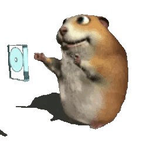

Me uní a Ingeniería de Sistemas porque me interesa la tecnología y quiero aprender a crear soluciones que ayuden a las personas y a las organizaciones. También me motiva prepararme para tener buenas oportunidades profesionales en un área que está en constante crecimiento.
Me gusta que la carrera combine lógica, creatividad y resolución de problemas. Disfruto aprender programación, desarrollo web y nuevas herramientas, además de poder convertir una idea en un sistema o proyecto funcional.
